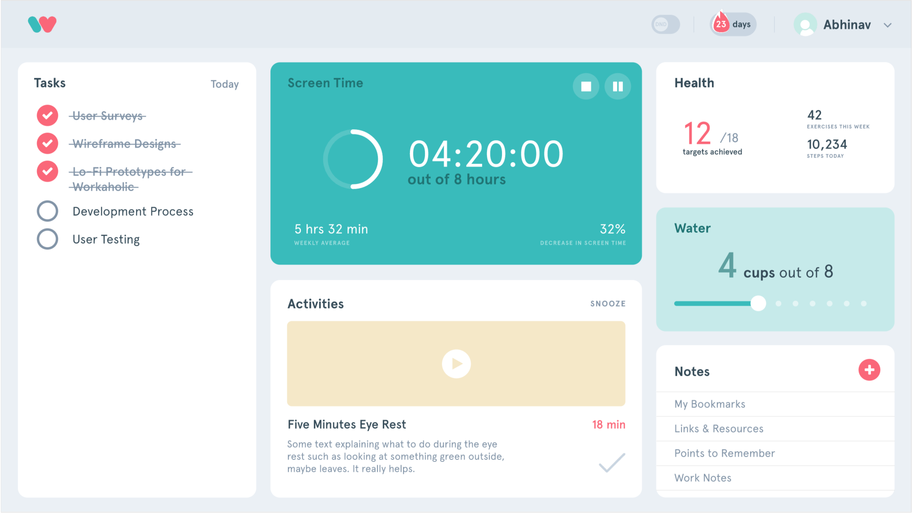
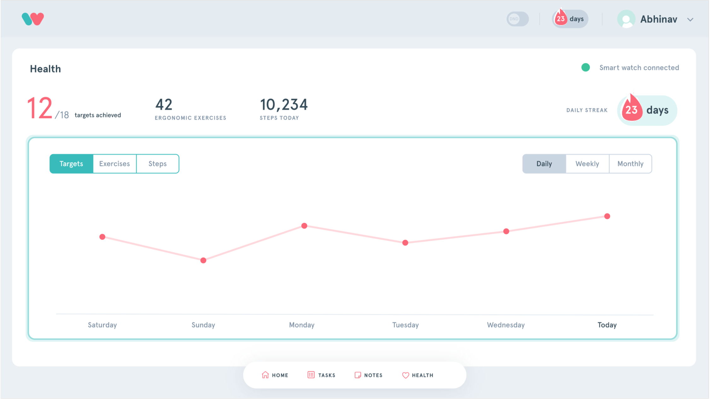
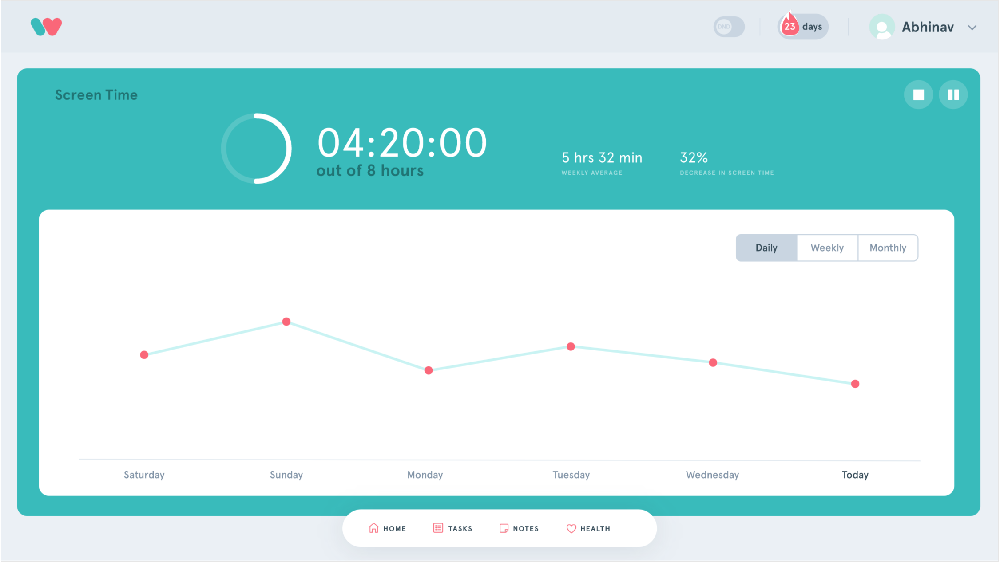
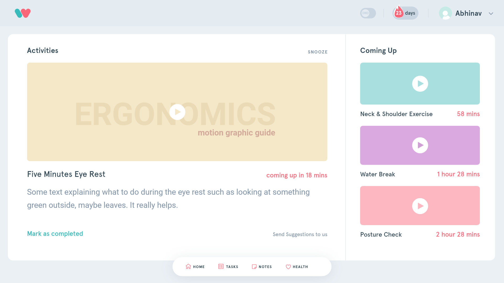

Interaction Design, User Experience Design, Web Application
May 2019 - present
Full-stack development
Vue.js, Node.js, Firebase
A productivity platform that cares for your health.
People spend almost 5-10 hours per day in front of their screens. This work requires them to be continuously seated for long hours which affects their physical health in terms of eyesight, posture, neck pain, dehydration and headaches. This problem isn't just limited to tech offices; a lot of people now have their daily tasks centered around laptops.
As a small step towards building a healthy interaction with our devices, Workaholic is a Chrome extension that aims to improve your health and professional life.
Ideation & Paper Prototypes
Brainstorming Features
Wireframe Layout
Dashboard Design
Workaholic is a productivity tool in your browser that helps you track your health goals. It comes with a web application that acts as the dashboard to track your health data and see your progress.
The Dashboard takes care of screen time, ergonomic activites, hydration, everyday tasks and note taking. Each of these functions are present as interactive cards where users can enter their data--such as health or notes--and observe its trends over time. The dashboard app can be added as the default New Tab homepage in Chrome.
Tracking the user's health
The Health Card provides a visual representation of the user's health goals. We plan to add 3rd party integrations, such as Apple Health to coalesce the user's health data and keep them up to date with their everyday activity goals. 
Screen time is constantly visible to the user on the dashboard. They can pause or stop this at any time while taking a break or finishing work for the day. Expanding the card allows users to get more insight and view trends over time.
Ergonomic Activities
This tab provides instructions from the app to the user in the form of ergonomic exercises like stretching, neck and shoulder exercise as well as posture checks. It provides the user with (optional) instructional videos and complete control over the activity such as snoozing and/or increasing their frequency.
Productivity through
Tasks & Notes
The importance of productivity is maintained in the design as the users can easily manage their schedules and take quick notes in the app. The expanded task view contains a calendar with reminders for the month along with the day's to-do list.
Currently, Workaholic is under development. We will begin beta-testing soon by sharing the app with offices and evaluating feedback.